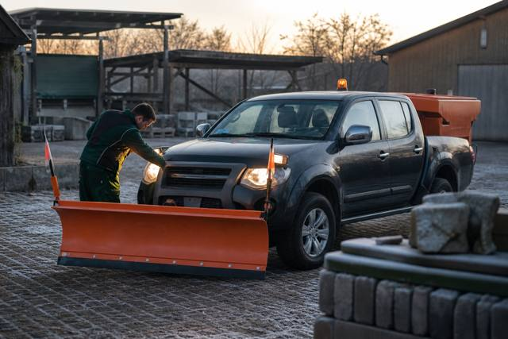
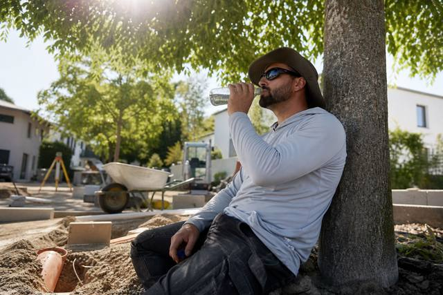

Aktuell
Alle 60 Artikel
Azubis für 2027: Drei Hebel, die Betriebe jetzt im Herbst umlegen
Die Ausbildungsverträge für den Start im August 2027 werden im Winter geschlossen. Wer im Herbst Praktika anbietet, in der Berufsschule sichtbar ist und die Eltern mitdenkt, hat im März unterschriebene Verträge.

Winterdienst-Personal: Bereitschaft regeln, bevor der erste Schnee fällt
Winterdienstverträge werden im September unterschrieben, die Bereitschaft der Mitarbeiter im November improvisiert. Was Rufbereitschaft von Bereitschaftsdienst unterscheidet, welche Ruhezeiten auch nachts gelten und wie Betriebe die Einsätze vergüten.

ifo im August: Weniger Pessimismus am Bau, mehr Stornierungen im Wohnungsbau
Der ifo-Geschäftsklimaindex steigt auf 88,8 Punkte, das Bauhauptgewerbe blickt weniger düster nach vorn. Im Wohnungsbau sinkt der Anteil der Betriebe mit Auftragsmangel – aber jedes achte Unternehmen meldet Stornierungen. Was das für die Außenanlagen bedeutet.

Die erste Woche: Wie neue Azubis ankommen – und was in den ersten Tagen entscheidet, ob sie bleiben
Anfang August beginnen im GaLaBau die Ausbildungsverhältnisse. Die Abbrüche fallen meist in den ersten Monaten. Was das Gesetz für Jugendliche verlangt, was der Betrieb vorbereiten sollte und warum der Pate wichtiger ist als der Ausbilder.

Werkzeugkasten für Bauleiter: Sechs digitale Helfer, die den Tag kürzer machen
Aufmaß, Bautagebuch, Fotodokumentation, Zeiterfassung, Wetter, Material – für jede Aufgabe gibt es Apps. Welche Kategorien sich im Alltag von GaLaBau-Bauleitern bewähren, worauf es bei der Auswahl ankommt und warum weniger oft mehr ist.

E-Rechnung: Ab 2027 müssen größere Betriebe elektronisch versenden – eine PDF reicht nicht
Empfangen müssen alle Betriebe seit 2025. Ab dem 1. Januar 2027 gilt die Versandpflicht für Unternehmen mit mehr als 800.000 Euro Umsatz, ab 2028 für alle. Was eine E-Rechnung ist, wer betroffen ist und wie Betriebe die Umstellung im Winter angehen.

Ausgabe 09/2026: Nürnberg
Vom 15. bis 18. September trifft sich die Branche zur GaLaBau. Wir haben das Messeprogramm gelesen, die E-Maschinen der Aussteller angeschaut, den Winterdienst-Plan vorgezogen und die Frage mitgenommen, die in jeder Halle gestellt wird: Wo kommen die Leute her? Unsere Branchenumfrage 2026 sucht Antworten.


Ecklohn 20,91 Euro: Was der Tarifabschluss ab heute für Betriebe bedeutet

Zeiterfassung: Der Referentenentwurf will die elektronische Pflicht – Papierzettel hätten ausgedient

Zehn Stunden am Tag? Was das Arbeitszeitgesetz in der Saison erlaubt – und wo die Grenze liegt

KI im GaLaBau: Angebot per Prompt, Aufmaß per Drohne – was heute schon funktioniert

Transporter mit Anhänger: Wann B reicht, wann B96, wann BE – und was die EU ändert

Saisonstart: Der Maschinen-Check vor dem ersten Einsatz – und welche Prüfungen Pflicht sind


Insolvenzen: Höchster Stand seit 2013 – der Bau liegt 4,5 Prozent über dem Vorjahr

Stabile Aufträge, getrübte Stimmung: Die Frühjahrsumfrage 2026

Betriebsnachfolge: 186.000 Unternehmen suchen bis 2030 einen Nachfolger – im GaLaBau entscheidet der Meister im eigenen Haus

Erstmals unter 90.000: Die Unfallzahlen der BG BAU sinken – die Berufskrankheiten steigen

Hitze und UV: Was Betriebe ab UV-Index 3 tun müssen – und was die BG BAU dazuzahlt

Zecken: 185 Risikogebiete – was Betriebe für ihre Kolonnen tun müssen


50 Pflanzen in 30 Minuten: Wie die Pflanzenkenntnis-Prüfung läuft – und wie Betriebe ihre Azubis vorbereiten

Vom Landschaftsgärtner zum Bauleiter: Drei Wege, ein Ziel

8.089 Auszubildende: Der GaLaBau bildet so viele Landschaftsgärtner aus wie lange nicht


Wie viele Fachkräfte wohnen im Umkreis Ihres Betriebs?
Postleitzahl eingeben, Fachkräfte-Potenzial im 30-Kilometer-Umkreis sehen, dazu Standorttyp und drei Voraussetzungen für die Mitarbeitersuche. Kostenlos.
Standort prüfenWie finden Betriebe 2026 Mitarbeiter?
Zwölf Fragen, drei Minuten. Die Ergebnisse veröffentlichen wir im Oktober. Als Dankeschön erhalten Teilnehmer den Standort-Check.
An der Umfrage teilnehmen